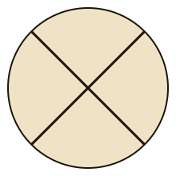
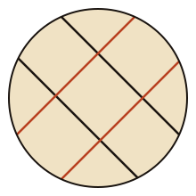
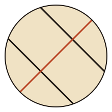

Weave Mark — Three Variations
Variation 01
The Cross
Single crossing. Two diagonals meeting at center. Warp meets weft.

FullVariation 02
The Loom
Double crossing. Two pairs of parallels — black warp, terracotta weft. Reads as woven structure.

FullVariation 03
The Reed
Offset asymmetric. Two warp threads crossed by a single terracotta weft. Intentionally off-centre.

FullRecommendation
Variation 02 — The Loom
V2 is the strongest mark. The two-colour structure (black warp + terracotta weft) immediately reads as woven textile without being literal. It holds at every size — from embroidered rug label to Instagram profile to nav favicon. The four-line grid is complex enough to carry the brand at large scale, yet simple enough to stitch by hand at 1cm. V1 risks reading as a target or crosshair. V3 has strong asymmetry but the offset feels accidental rather than intentional at small sizes.